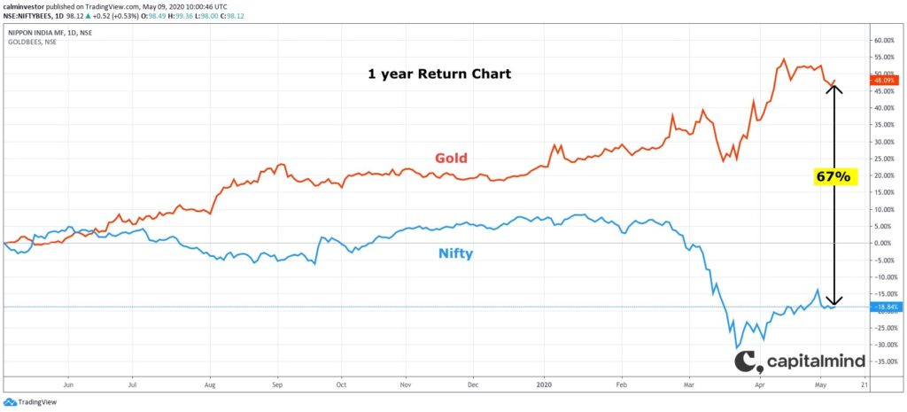
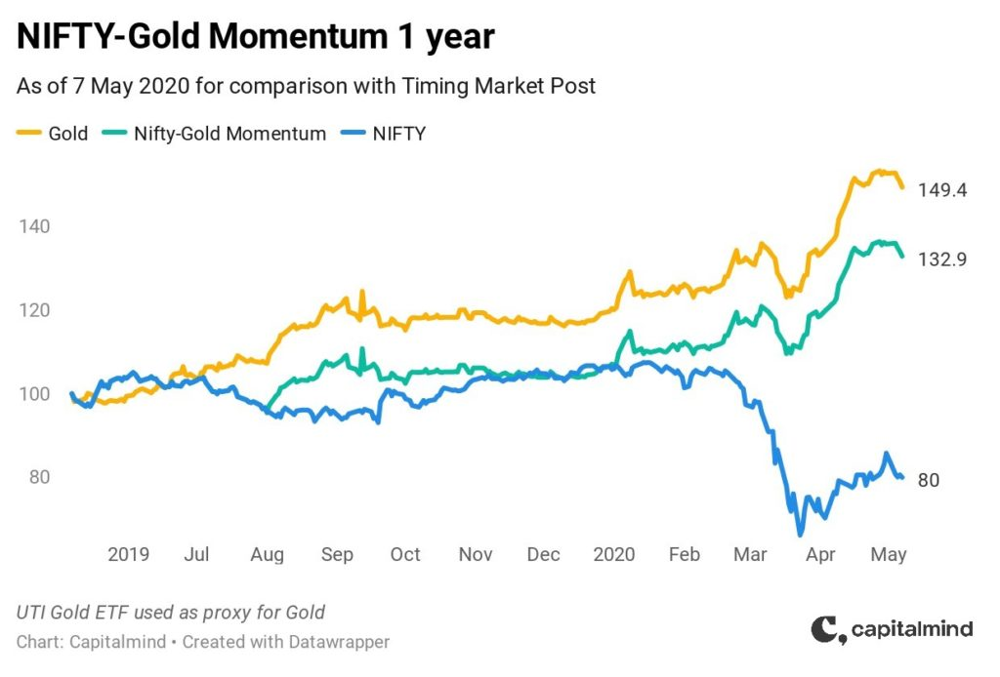
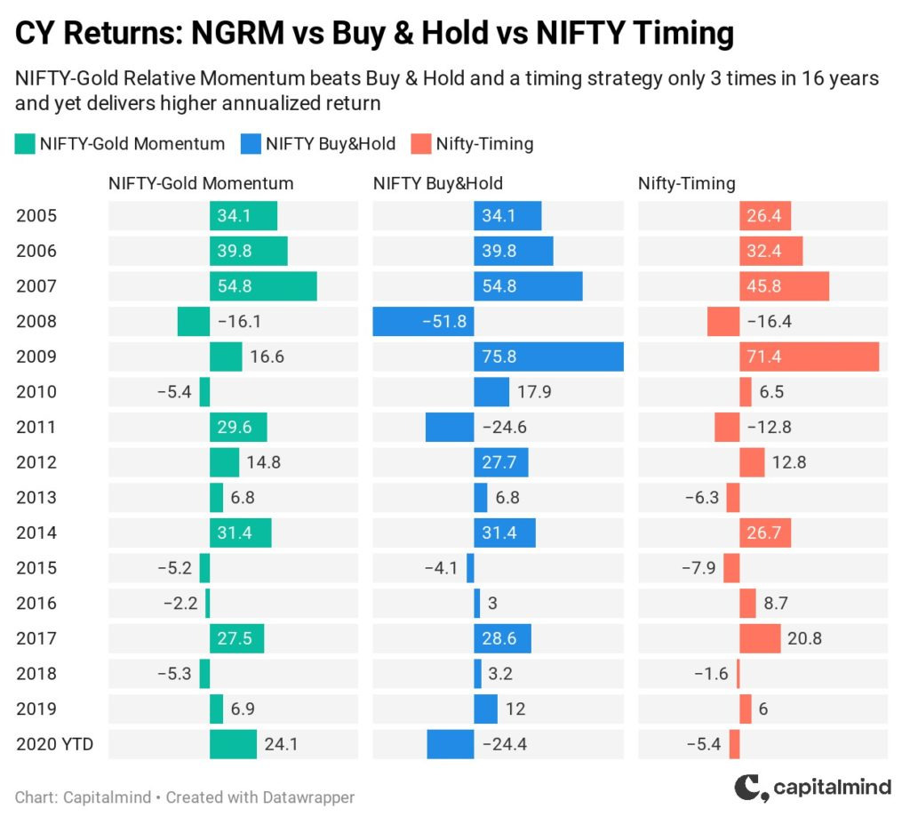
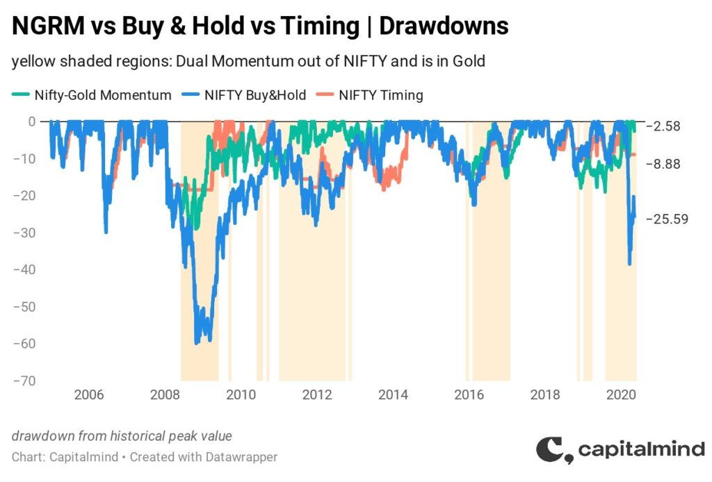

We recently wrote about the importance of timing the market.
How, a simple rule-based strategy that exits the market whenever a daily moving average
threshold is breached, and reenters when it is regained, not only outperforms Buy and Hold, but does it with
lower drawdowns in times of market stress. Like in 2008, 2011, and now in 2020.
A simple rule-based strategy that exits the market when a daily moving average threshold is breached, and
reenters when it is regained, not only outperforms Buy and Hold, also sees lower drawdowns.
We opened that post with a chart comparing one year returns of the NIFTY and Gold. Here is that
same chart again.
Nifty
Gold
— 1-Year Return Comparison

Since then, that 67% gap in 1 year return between the two assets has widened by another 250
basis points.
We have not been cheerleaders for gold. Our take on the topic was if you
need to own gold, Sovereign Gold Bonds were the way to go for Indian investors.
But we have been thinking a fair bit about the role of momentum in driving portfolio returns. So
we adapted an approach outlined in Gary Antonacci's Dual Momentum to test the idea of switching
between NIFTY and Gold.
Dual Momentum
Gary's dual momentum strategy considers three assets: the US market index, a world stock index
(minus the US), and a Bond index.
Every month:
- Check if the US market index has outperformed the risk-free (Treasury Bill) rate over the trailing 1 year
- If yes, compare the US market index with the World market index and allocate to the higher of the two
- However, if the US market index has not outperformed the risk-free rate, allocate to the US Bond Index
We adapted and simplified this to the NIFTY versus Gold question, represented in this simple
decision flow.
On the first trading day of every month, check whether NIFTY, or Gold has had higher 1 year
returns, and move completely into that asset. No diversification.
This means if the asset you're currently in is the higher performing asset, you don't take any
action (except to add more if you were planning to).
The NIFTY-Gold Relative Momentum (NGRM) Strategy
Chart shows the one year performance of the relative momentum strategy (green line) versus both
Gold and the NIFTY.
NGRM Strategy
Nifty
Gold
— 1-Year Performance

The strategy was in the NIFTY in May 2019, moved into Gold in Aug 2019 and has stayed in Gold
since. It doesn't capture all of Gold's return but outperforms the NIFTY by a whopping 50%.
The relative momentum strategy was in the NIFTY in May 2019, moved into Gold in Aug 2019 and has stayed in
Gold since.
How does such a strategy do over a longer term?
Chart shows NGRM versus just buying and holding the NIFTY, and also the NIFTY-only timing
strategy we explored sometime ago.
Even setting aside the recent NIFTY fall and surge in Gold, a Relative Momentum strategy beats NIFTY Buy
& Hold strategy comfortably. It even beats the NIFTY timing strategy that goes to cash.
Like always, we need to go beyond cumulative return charts to tell how any strategy truly
compares against simple buy and hold.
NGRM
Nifty B&H
— Year-by-Year Returns

The Dual Momentum strategy of switching between the NIFTY and Gold only beats Buy & Hold
and a timing strategy in 3 out of the 16 years we ran this backtest. And yet it comes out ahead on the
metric that matters, annualised return.
Look at 2009 and 2010 where this strategy would have been hopelessly outmatched because it would
have stayed in Gold for a large part of the year as it waits for NIFTY to recover from its bleeding in 2008
before entering.
But again, like a lot of rule-based timing strategy, Dual Momentum would have stepped out of
equities and into Gold in the nick of time in 2008, and again in 2020. And that explains a large part of its
outperformance.
Here are portfolio drawdowns compared.
NGRM
Nifty B&H
— Drawdown Comparison

A rules-based relative Momentum strategy manages to avoid the sharp drawdowns of only a Buy
& Hold approach. Side-stepping deep drawdowns allows you deliver average, even mediocre portfolio
performance in up years and still beat the market comfortably.
So Gold in a momentum strategy is just better?
Yes and No.
NGRM delivers a much higher return than Buy & Hold and a NIFTY-only timing strategy. It
manages to lose much less than Buy & Hold but more than the timing strategy. It signals only 1/3rd of the
trades of the timing strategy, making it more cost-efficient.
Objectively, a NIFTY-Gold Relative Momentum allocation strategy is superior to Buy & Hold,
and also to a NIFTY-only market-timing approach. But...
I (personally), do not like it much.
This must be an odd thing to read. After all, the evidence says, through two of the worst
drawdowns in recent history, a strategy that allocates to Gold beat the other strategies we considered.
Backtests, however accurately run, can not replicate your state of mind.
I have a bias for equities, and a slight discomfort with Gold. The strategy's
massive underperformance in the market rebounds of 2009 and 2010 means I probably would have bailed out of Gold
just at the wrong time, in 2010. Only to be hit by the 2011 decline in equities. Disaster all around.
Any strategy is only worth it if you can stick with it. A complete exit from equities into Gold
is probably not for most investors. It's certainly not for me.
Turns out we are much more comfortable holding Gold as part of a portfolio of holdings showing
stronger relative momentum. Which is how, as of writing this, almost a quarter of our Momentum
Portfolio has been in gold since early March 2020. Our equity allocation, which went to a low of barely
10% during that time, has progressively gone back up to nearly 70% as more stocks have recovered from the lows
of March. Gold is still there, for now.
The value of Dual Momentum
For this discussion, we did not apply Dual Momentum the way Gary so clearly laid out in his
book. We modified it to include Gold instead of Debt. Not a fair test of the strategy.
But the fact that even with a modified implementation, the relative momentum strategy beat Buy
& Hold is proof of the solidity of the underlying principle. Of having defined rules that lead you to exit
investments and re-enter them.
Dual momentum is called that because it utilizes both absolute and relative momentum.
Absolute momentum is an asset's momentum with respect to itself in the past. Relative, or cross-sectional
momentum is its momentum with respect to other assets.
If all stocks are down from a year ago, relative momentum will pick the stocks to have fallen the least.
Absolute momentum on the other hand, with a condition "should have beaten risk-free rate" will eliminate many
securities from consideration.
Our application, which is a variant of this condition eliminated all but 4
stocks in March 2020 and so, a large part of our momentum portfolio was in cash for most of March and April.
A fair test of the Dual Momentum strategy for India will need:
- An asset representative of debt, possibly Bharat Bond ETF, or even access to an international debt ETF. We
would allocate to this every time the historical 1 year excess return of the NIFTY turns negative
- One or more other assets reasonably uncorrelated with the NIFTY, possibly the MSCI regional indices, or the
Nasdaq 100
Theoretically, every liquid diversified asset in the world could be part of this list, for the
strategy to allocate to the one with the strongest relative momentum.
Finally, every deep dive into potential strategies only strengthens my conviction that unless you're
exceptionally gifted at reading future trends, buy and hold might be one of the poorer strategies out there.
A consistent set of rules that drive portfolio sizing, allocation, and exit decisions won't give
you the satisfaction of talking up your multi-baggers, but you will do better than most investors.
A consistent set of rules that drive portfolio sizing, allocation, and exit decisions won't give you the
satisfaction of talking up your multi-baggers, but you will do better than most investors.
The book is also a great read because of the way it summarises a huge amount of investment
history.